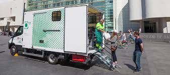

LaNovaVeu - Notícies del barri
Projecte ecològic transforma el barri
Una nova iniciativa impulsada per veïns busca millorar el medi ambient al nostre barri.
El projecte inclou la creació de punts verds i la promoció de mitjans de transport
sostenibles com la bicicleta.
Amb la participació de ajuntament, es preveu reduir un 30% de les emissions en
els pròxims 2 anys. Els veïns també col·laboren en jornades de neteja i educació ambiental.

Punts destacats del projecte:
- Instal·lació de punts verds
- Creació de nous carrils bici
- Tallers educatius per a escoles
Altres notícies relacionades:
- L’Ajuntament promou el reciclatge
- Cap a ciutats més verdes
- Notícies d’última hora
Glossari:
- Punt verd
- Espai on es poden dipositar residus reciclables de manera selectiva.
- Mobilitat sostenible
- Formes de transport que redueixen impacte ambiental.
- Reciclatge
- Procés per transformar residus en nous productes reutilitzables.